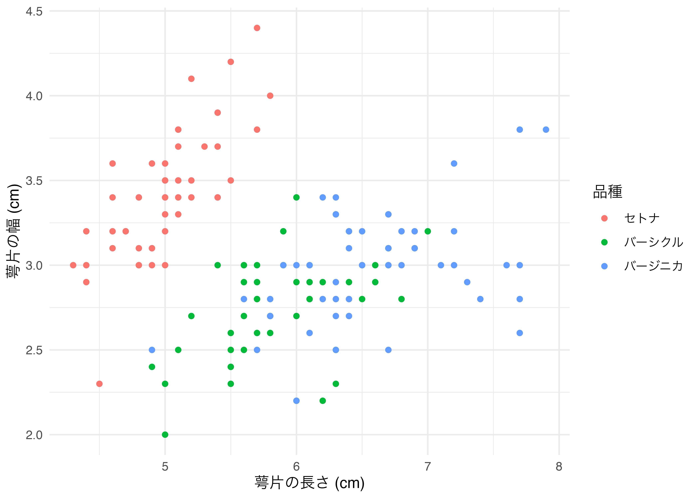
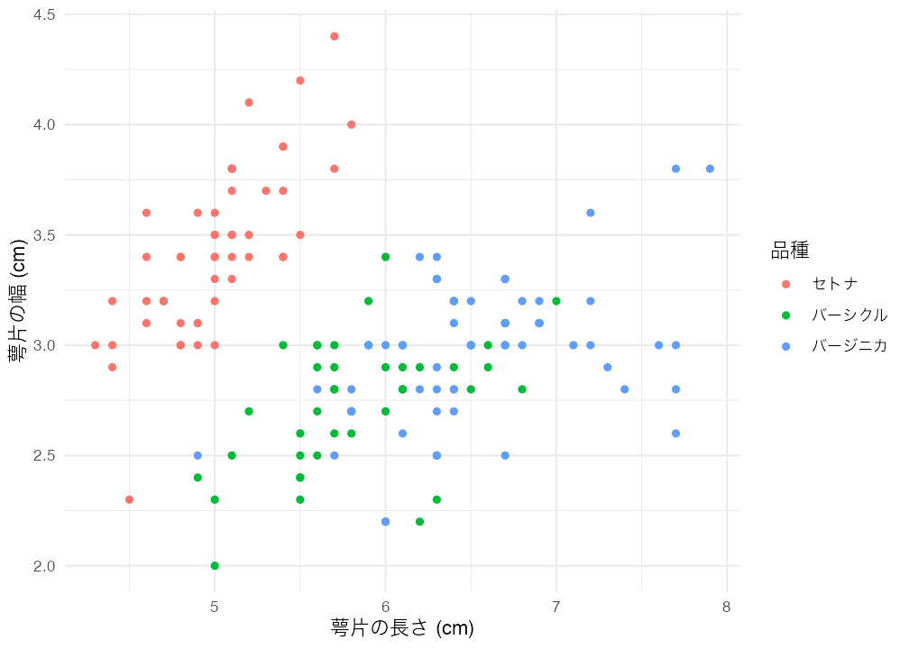
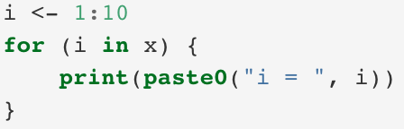
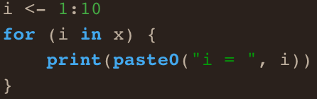

print("Hello World!")[1] "Hello World!"R Markdownとは名前通り、RとMarkdownが結合されたものです。本書を通じてRを紹介してきましたが、Markdownは初めて出てくるものです。John GruberとAaron Swartzが2004年提案した軽量Markup言語ですが、そもそもMarkup言語とはなんでしょうか。
Markup言語を知るためにはプレーンテキスト（plain text）とリッチテキスト（rich text、またはマルチスタイルテキスト）の違いについて知る必要があります。プレーンテキストとは書式情報などが含まれていない純粋なテキストのみで構成されている文書です。書式情報とは文書の余白、文字の大きさ、文字の色などがあります。これまでRStudio上で書いてきたRコードもプレーンテキストです。コードに色が自動的に付けられますが、これはRStudioが色付けをしてくれただけで、ファイル自体はテキストのみで構成されています。macOSのTextEdit、Windowsのメモ帳、Linux GUI環境のgeditやKATE、CLI環境下のvim、Emacs、nanoなどで作成したファイルは全てプレーンテキストです。これらのテキストエディターには書式設定や図表の挿入などの機能は付いておりません。一方、リッチテキストとは書式情報だけでなく、図表なども含まれる文書です。Microsoft Wordとかで作成したファイルがその代表的な例です。他にもPagesやLibreOffice Writerから作成したファイルなどがあります。これらのワードプロセッサーソフトウェアは書式の設定や図表・リンクの挿入などができます。そして、Markup言語とはプレーンテキストのみでリッチテキストを作成するための言語です。
Markup言語の代表的な存在がHTMLです。そもそもHTMLのMLはMarkup Languageの略です。読者の皆さんがウェブブラウザから見る画面のほとんどはHTMLで書かれています。この『私たちのR』もHTMLです。この文書には図表があり、太字、見出し、水平線など、テキスト以外の情報が含んでいます。しかし、HTMLは純粋なテキストのみで書かれており、ウェブブラウザ（Firefox、Chrome、Edgeなど）がテキストファイルを読み込み、解釈して書式が付いている画面を出力してくれます。例えば、リンク（hyperlink）について考えてみましょう。「SONGのHP」をクリックすると宋のホームページに移動します。ある単語をクリックすることで、他のウェブサイトへ飛ばす機能を付けるためにはHTMLファイルの中に、以下のように入力します。
<a href="https://www.jaysong.net">SONGのHP</a>これをウェブブラウザが自動的に「SONGのHP」と変換し、画面に出力してくれます。これは、書式情報などが必要な箇所にコードを埋め込むことによって実現されます。そして、このMarkup言語をより単純な文法で再構成したものがMarkdownです。例えば、以上のHTMLはMarkdownでは以下のように書きます。
[SONGのHP](https://www.jaysong.net)同じ意味のコードですが、Markdownの方がより簡潔に書けます。このMarkdownは最終的にHTMLやMicrosoft Word、PDF形式で変換されます。一般的にはHTML出力を使いますが、自分のPCにLaTeX環境が用意されている場合はPDF形式で出力することも可能であり、個人的には推奨しておりませんが、Microsoft Work文書ファイルへ変換することも可能です。また、HTML（+ JavaScript）へ出力可能であることを利用し、スライドショー、e-Book、ホームページの作成にもMarkdownが使えます。
R MarkdownはMarkdownにRコードとその結果を同時に載せることができるMarkdownです。それでもピンと来ない方も多いでしょう。それでは、とりあえず、R Markdownをサンプルコードから体験してみましょう。
R Markdownの文法について説明する前に、とりあえずR Markdownというのがどういうものかを味見してみます。既に述べたようにR MarkdownにはRコードも含まれるため、事前にプロジェクトを生成してから進めることをおすすめします。
R Markdownファイルを生成するにはFile -> New File -> R Markdown…を選択します。Title:とAuthor:には文書のタイトルと作成者を入力します。Default Output FormatはデフォルトはHTMLとなっていますが、このままにしておきましょう。ここでの設定はいつでも変更可能ですので、何も触らずにOKを押しても大丈夫です。
OKを押したら自動的にR Markdownのサンプルファイルが生成されます。そしたらSourceペインの上段にある ボタン1をクリックしてみましょう。最初はファイルの保存ダイアログが表示されますが、適切な場所（プロジェクトのフォルダなど）に保存すれば、自動的にMarkdown文書を解釈し始めます。処理が終わればViewerペインに何かの文章が生成されます。これからの内容を進める前にSourceペインとViewerペインの中身をそれぞれ対応しながら、どのような関係があるのかを考えてみましょう。
ボタン1をクリックしてみましょう。最初はファイルの保存ダイアログが表示されますが、適切な場所（プロジェクトのフォルダなど）に保存すれば、自動的にMarkdown文書を解釈し始めます。処理が終わればViewerペインに何かの文章が生成されます。これからの内容を進める前にSourceペインとViewerペインの中身をそれぞれ対応しながら、どのような関係があるのかを考えてみましょう。
R Markdownファイルは大きく3つの領域に分けることができます（ 図 22.1 ）。まず、最初に---と---で囲まれた領域はヘッダー（Header）と呼ばれる領域です。ここでは題目、作成者情報の入力以外にも、文書全体に通じる設定を行います。これは第22.5節で解説します。次はR Markdownの核心部であるチャンク（Chunk）です。チャンクは```{r}と```で囲まれた領域であり、Rコードが入る箇所です。チャンクに関しましては第22.3節の後半と第22.4節で解説します。その他の領域がマークダウン（Markdown）であり、文書に該当します。

まずは、文章の書き方から説明します。非常に簡単な文法で綺麗、かつ構造化された文書が作成可能であり、これに慣れるとMarkdown基盤のノートアプリなどを使って素早くノート作成、メモが出来ます。
まずは、Markdownの文法について解説します。ここではMarkdown文書内に以下のようなことを作成する方法を実際の書き方と、出力画面を対比しながら解説していきます。
Markdownにおける改行はやや特殊です。特殊といっても難しいことはありません。普段よりもう一行改行するだけです。Markdownの場合、1回の改行は改行として判定されず、同じ行の連続と認識します。たとえば、Inputのように入力するとOutputのように文章1と文章2が繋がります。
Input:
文章1
文章2Output:
文章1 文章2
文章1と文章2を改行するためにはもう一行、改行する必要があります。以下の例を見てください。
Input:
文章1
文章2Output:
文章1
文章2
こうすることで段落間の間隔を強制的に入れることとなり、作成者側にも読みやすい文書構造になります2。
文章の一部を強調する方法として太字、イタリック3、アンダーラインがあり、強調ではありませんが、ついでに取り消し線についても紹介します。いずれも強調したい箇所を記号で囲むだけです。
Input:
文章の一部を**太字**にしてみましょう。
*イタリック*もいいですね。
~~取り消し線~~はあまり使わないかも。
<u>アンダーライン</u>はHTMLタグを使います。Output:
文章の一部を太字にしてみましょう。
イタリックもいいですね。
取り消し線はあまり使わないかも。
アンダーラインはHTMLタグを使います。
箇条書きには順序なしと順序付きがあります。順序なしの場合*または-の後に半角スペースを1つ入れるだけです。また、2文字以上の字下げで下位項目を追加することもできます。
Input:
- 項目1
- 項目1-1
- 項目1-2
- 項目1-2-1
- 項目1-2-1-1
- 項目1-2-2
- 項目2
- 項目3Output:
続きまして順序付き箇条書きですが、これは-（または*）を数字.に換えるだけです。順序なしの場合と違って数字の後にピリオド（.）が付くことに注意してください。また、下位項目を作成する際、順序なしはスペース2つ以上が必要でしたが、順序付きの場合、少なくとも3つが必要です。
Input:
1. 項目1
1. 項目1-1
2. 項目1-2
2. 項目2
* 項目2-1
* 項目2-2
3. 項目3Output:
章、節、段落のタイトルを付ける際は#を使います。#の数が多いほど文字が小さくなります。章の見出しを##にするなら節は###、小節または段落は####が適切でしょう。見出しは####まで使えます。
Input:
# 見出し1
## 見出し2
### 見出し3
#### 見出し4Output:
区切り線は---または***を使います。
Input:
---Output:
Markdownの表は非常にシンプルな書き方をしています。行は改行で、列は|で区切られます。ただ、表の第1行はヘッダー（変数名や列名が表示される行）扱いとなり、ヘッダーと内容の区分は|---|で行います。以下はMarkdownを利用した簡単な表の書き方です。ここでは可読性のためにスペースを適宜入れましたが、スペースの有無は結果に影響を与えません。
Input:
|ID |Name |Math |English |Favorite food|
|:---:|---------|-------:|-------:|-------------|
|1 |SONG |15 |10 |Ramen |
|2 |Yanai |100 |100 |Cat food |
|3 |Shigemura|80 |50 |Raw chicken |
|4 |Wickham |80 |90 |Lamb |Output:
| ID | Name | Math | English | Favorite food |
|---|---|---|---|---|
| 1 | SONG | 15 | 10 | Ramen |
| 2 | Yanai | 100 | 100 | Cat food |
| 3 | Shigemura | 80 | 50 | Raw chicken |
| 4 | Wickham | 80 | 90 | Lamb |
1行目はヘッダーであり、太字かつ中央揃えになります。2行目以降はデフォルトでは左揃えになりますが。ただし。|---|をいじることによって当該列の揃えを調整できます。|:---|は左 (デフォルト)、|---:|は右、|:---:|は中央となります。また-の個数は1個以上なら問題ありません。つまり、|-|も|---|も同じです。
R Markdownに画像を入れるにはと入力します。当たり前ですが、画像ファイルがワーキングディレクトリにない場合はパスを指定する必要があります。[代替テキスト]は画像を読み込めなかった場合のテキストを意味します。これは画像が読み込めなかった場合の代替テキストでもありますが、視覚障害者用のウェブブラウザーのためにも使われます。これらのウェブブラウザーはテキストのみ出力されるものが多く、画像の代わりには代替テキストが読み込まれます。
例えば、Figsフォルダー内のfavicon.pngというファイルを読み込むとしたら以下のように書きます。
Input:
Output:

ハイパーリンクは[テキスト](URL)のような形式で書きます。[]内は実際に表示されるテキストであり、()は飛ばすURLになります。
Input:
毎日1回は[SONGのホームページ](https://www.jaysong.net)へアクセスしましょう。Output:
毎日1回はSONGのホームページへアクセスしましょう。
脚注は[^固有識別子]と[^固有識別子]: 脚注内容の2つの要素が必要です。まず、文末脚注を入れる箇所に[^xxxx]を挿入します。xxxxは任意の文字列れ構いません。しかし、同じR Markdown内においてこの識別子は被らないように注意してください。実際の脚注の内容は[^xxxx]: 内容のように入力します。これはどこに位置しても構いません。文書の途中でも、最後に入れても、脚注の内容は文末に位置します。ただし、脚注を入れる段落のすぐ後の方が作成する側としては読みやすいでしょう。
Input:
これは普通の文章です[^foot1]。
[^foot1]: これは普通の脚注です。Output:
これは普通の文章です4。
インライン数式は$数式$で埋め込むことができます。数式はLaTeXの書き方とほぼ同じです。ちなみに、R Markdownの数式はMathJaxによってレンダリングされます。このMathJaxライブラリはHTMLに埋め込まれているのではないため、インターネットに接続せずにHTMLファイルを開くと数式が正しく出力されません。
Input:
アインシュタインと言えば、$e = mc^2$でしょう。Output:
アインシュタインと言えば、\(e = mc^2\)でしょう。
数式を独立した行として出力する場合は、$の代わりに$$を使用します。
Input:
独立した数式の書き方
$$
y_i \sim \text{Normal}(\mathbf{X} \boldsymbol{\beta}, \sigma).
$$Output:
独立した数式の書き方
\[ y_i \sim \text{Normal}(\mathbf{X} \boldsymbol{\beta}, \sigma). \]
もし数式が複数の行で構成されている場合は$$内にaligned環境（\begin{aligned}〜\end{aligned}）を使用します。むろん、LaTeXと使い方は同じです。
Input:
複数の行にわたる数式の書き方
$$
\begin{aligned}
Y_i & \sim \text{Bernoulli}(\theta_i), \\
\theta_i & = \text{logit}^{-1}(y_i^*), \\
y_i^* & = \beta_0 + \beta_1 x_1 + \beta_2 z_1.
\end{aligned}
$$Output:
複数の行にわたる数式の書き方
\[ \begin{aligned} Y_i & \sim \text{Bernoulli}(\theta_i), \\ \theta_i & = \text{logit}^{-1}(y_i^*), \\ y_i^* & = \beta_0 + \beta_1 x_1 + \beta_2 z_1. \end{aligned} \]
ここまで見ればお分かりかと思いますが、$$の中にはLaTeXコマンドが使用可能です。たとえば、行列を作成する際は以下のように\begin{bmatrix}環境を使います。
Input:
行列の書き方
$$
X = \begin{bmatrix}
x_{11} & x_{12} \\
x_{21} & x_{22} \\
x_{31} & x_{32}
\end{bmatrix}.
$$Output:
行列の書き方
\[ X = \begin{bmatrix} x_{11} & x_{12} \\ x_{21} & x_{22} \\ x_{31} & x_{32} \end{bmatrix}. \]
引用の際は文章の最初に>を入れるだけです。>の後に半角のスペースが1つ入ります。
Input:
「政治とは何か」についてイーストンは以下のように定義しました。
> [A] political system can be designated as those interactions through which values are authoritatively allocated for a society.Output:
「政治とは何か」についてイーストンは以下のように定義しました。
[A] political system can be designated as those interactions through which values are authoritatively allocated for a society.
R Markdownにもコメントを付けることができます。とりあえず書いたが要らなくなった段落や文章があって、消すことがもったいない場合はコメントアウトするのも1つの方法です。ただし、コメントアウトの方法はRは#でしたが、これはR Markdownでは見出しの記号です。R Markdownのコメントは<!--と-->で囲みます。
Input:
文章1
<!--
ここはコメントです。
-->
文章2Output:
文章1
文章2
以上の内容まで抑えると、R Markdownを使って、簡単な文法のみで構造化された文書が作成できます。しかし、R Markdownの意義は文章とコード、結果が統合されることです。それでは文書にRコードを入れる方法について紹介します。
コードは```{r}と```の間に入力します。これだけです。これでコードと結果が同時に出力されます。たとえば、print("Hello World!")を走らすコードを入れてみます。
Input:
"Hello World!"を出力するコード
```{r}
print("Hello World!")
```Output:
“Hello World!”を出力するコード
print("Hello World!")[1] "Hello World!" ```{r}と```で囲まれた範囲をR Markdownではチャンク（Chunk）と呼びます。このチャンク内ではRと全く同じことが出来ます。パッケージやデータの読み込み、オブジェクトの生成、データハンドリング、可視化など、全てです。
Input:
```{r}
# パッケージの読み込み
library(tidyverse)
# R内蔵データセットのirisを使った可視化
iris %>%
mutate(Species2 = recode(Species,
"setosa" = "セトナ",
"versicolor" = "バーシクル",
"virginica" = "バージニカ")) %>%
ggplot() +
geom_point(aes(x = Sepal.Length, y = Sepal.Width, color = Species2)) +
labs(x = "萼片の長さ (cm)", y = "萼片の幅 (cm)", color = "品種") +
theme_minimal(base_family = "HiraKakuProN-W3")
```Output:
# パッケージの読み込み
library(tidyverse)
# R内蔵データセットのirisを使った可視化
iris %>%
mutate(Species2 = recode(Species,
"setosa" = "セトナ",
"versicolor" = "バーシクル",
"virginica" = "バージニカ")) %>%
ggplot() +
geom_point(aes(x = Sepal.Length, y = Sepal.Width, color = Species2)) +
labs(x = "萼片の長さ (cm)", y = "萼片の幅 (cm)", color = "品種") +
theme_minimal(base_family = "HiraKakuProN-W3")
他にも文中にRコードを埋め込むことも可能です。例えば、ベクトルX <- c(2, 3, 5, 7, 12)があり、この平均値を文中で示したいとします。むろん、文中に「5.8」と書いても問題はありません。しかし、実はXの入力ミスが見つかり、実はc(2, 3, 5, 7, 11)になったらどうなるでしょうか。この「5.8」と書いた箇所を見つけて5.6と修正したいといけません。これは非常に面倒な作業であり、ミスも起こりやすいです。文中でRコードを入れるためには`rコード`のように入力します。
Input:
```{r}
X <- c(2, 3, 5, 7, 11)knit
```
変数`X`の平均値は`r mean(X)`です。Output:
X <- c(2, 3, 5, 7, 11)変数Xの平均値は5.6です。
ここで`X`ですが、単に`で囲まれただけではコードと認識されません。これは主に文中に短いコードを入れる際に使う機能です。
既に説明しましたとおり、R MakrdownはR + Markdownです。Rはチャンク、Markdownはチャンク外の部分に相当し、それぞれのカスタマイズが可能です。分析のコードと結果はチャンクにオプションを付けることで修正可能であり、文章の部分は次節で紹介するヘッダーで調整できます。ここではチャンクのオプションについて説明します。
チャンクは```{r}で始まりますが、実は{r}の箇所にオプションを追加することができます。具体的には{r チャンク名, オプション1, オプション2, ...}といった形です。まずはチャンク名について解説します。
チャンク名は{r チャンク名}で指定し、rとチャンク名の間には,が入りません。これはチャンクに名前をしていするオプションですが、多くの場合分析に影響を与えることはありません。このチャンク名が重要となるのはcacheオプションを付ける場合です。
cacheオプションは処理結果を保存しておくことを意味します。チャンク内のコードはKnitする度に計算されます。もし、演算にかなりの時間を費やすコードが含まれている場合、Knitの時間も長くなります。この場合、cache = TRUEオプションを付けておくと、最初のKnit時に結果をファイルとして保存し、次回からはその結果を読み込むだけとなります。時間が非常に節約できるため、よく使われるオプションの1つです。ただし、チャンク内のコードが修正された場合、Knit時にもう一回処理を行います。コードの実質的な内容が変わらなくても、つまり、スペースを1つ入れただけでも再計算となります。
ここで1つ問題が生じます。たとえば、以下のようなコードを考えてみてください。
```{r}
X <- c(2, 3, 5, 7, 10)
```
```{r, cache = TRUE}
mean(X)
``` この構造に問題はありません。しかし、ここでXの5番目の要素を11に修正したとします。そしてもう一回Knitを行ったらどうなるでしょうか。正解は「何も変わらない」です。新しいmean(X)の結果は5.6のはずですが、5.4のままです。なぜなら、2番目のチャンクの結果は既に保存されており、コードも修正していないからです。もう一回強調しておきますが、cahce = TRUEの状態で当該チャンクが修正されない場合、結果は変わりません。
このようにあるチャンクの内容が他のチャンク内容に依存しているケースがあります。この場合、dependsonオプションを使います。使い方はdependson = "依存するチャンク名"です。もし、1番目のチャンク名をdefine_Xとしたら、dependson = "define_X"とオプションを加えます。
```{r define_X}
X <- c(2, 3, 5, 7, 10)
```
```{r, cache = TRUE, dependson = "define_X"}
mean(X)
``` このようにチャンク名とcache、dependsonオプションを組み合わせると、依存するチャンクの中身が変わったら、cache = TRUEでも再計算を行います。
次は「コードだけ見せたい」、「結果だけ見せたい」場合使うオプションを紹介します。これはあまり使わないかも知れませんが、本書のような技術書にはよく使う機能です。コードのみ出力し、計算を行わない場合はeval = FALSEオプションを、コードを見せず、結果のみ出力する場合はecho = FALSEを指定するだけです。
他にもコードと結果を両方隠すことも可能です。つまり、チャンク内のコードは実行されるが、そのコードと結果を隠すことです。この場合に使うオプションがincludeであり、既定値はTRUEです。チャンクオプションにinclude = FALSEを追加すると、当該チャンクのコードは実行されますが、コードと結果は表示されません。
既に見てきた通り、R Markdownは作図の結果も出力してくれます。そこで、図のサイズや解像度を変えることもできます。ここではプロットに関するいくつかのオプションを紹介します。
fig.height: 図の高さ。単位はインチ。デフォルト値は7fig.width: 図の幅。単位はインチ。デフォルト値は7fig.align: 図の位置。デフォルトは"left"。"center"の場合、中央揃え、"right"の場合は右揃えになる。fig.cap: 図のキャプションdpi: 図の解像度。デフォルトは72。出版用の図は一般的に300以上を使う 実際に高さ5インチ、幅7インチ、中央揃え、解像度72dpiの図を作成し、キャプションとして「irisデータセットの可視化」を付けてみましょう。
Input:
```{r, fig.height = 5, fig.width = 7, fig.align = "center", fig.cap = "図の例", dpi = 72}
iris %>%
mutate(Species2 = recode(Species,
"setosa" = "セトナ",
"versicolor" = "バーシクル",
"virginica" = "バージニカ")) %>%
ggplot() +
geom_point(aes(x = Sepal.Length, y = Sepal.Width, color = Species2)) +
labs(x = "萼片の長さ (cm)", y = "萼片の幅 (cm)", color = "品種") +
theme_minimal(base_family = "HiraKakuProN-W3")
```Output:
iris %>%
mutate(Species2 = recode(Species,
"setosa" = "セトナ",
"versicolor" = "バーシクル",
"virginica" = "バージニカ")) %>%
ggplot() +
geom_point(aes(x = Sepal.Length, y = Sepal.Width, color = Species2)) +
labs(x = "萼片の長さ (cm)", y = "萼片の幅 (cm)", color = "品種") +
theme_minimal(base_family = "HiraKakuProN-W3")
第10章ではスクリプトの書き方を紹介しましたが、常にその書き方に則った書き方をしているとは限りません。自分だけが見るコードなら別に推奨されない書き方でも問題ないかも知れませんが、R Markdownの結果は他人と共有するケースが多いため、読みやすいコードを書くのも大事です。ここで便利なオプションがtidyオプションです。tidy = TRUEを加えると、自動的にコードを読みやすい形に調整してくれます。たとえば、以下のコードは字下げもなく、スペースもほとんど入れていないコードですが、tidy = TRUEを付けた場合と付けなかった場合の出力結果の違いを見てみましょう。
Input:
```{r, eval = FALSE}
for(i in 1:10){
print(i*2)
}
```Output:
for(i in 1:10){
print(i*2)
}Input:
```{r, eval = FALSE, tidy = TRUE}
for(i in 1:10){
print(i*2)
}
```Output:
for (i in 1:10) {
print(i * 2)
} tidy = TRUEを付けただけで、読みやすいコードになりました。ちなみにtidyオプションを使うためには事前にformatRパッケージをインストールしておく必要があります。ただし、formatRパッケージはR Markdwon内において読み込んでおく必要はありません。また、formatRパッケージは万能ではないため、普段から読みやすいコードを書くようにしましょう。
R Markdownファイルを生成すると、ファイルの最上段には以下のようなヘッダー（header）というものが生成されます。
---
title: "Untitled"
author: "Jaehyun Song"
date: "8/6/2020"
output: html_document
--- 基本的には4つの項目が指定されており、それぞれ文書のタイトル（title:）、作成者名（author:）、作成日（date:）、出力形式（output:）があります。タイトルと作成者名はファイル生成時に指定した内容が、作成日は今日の日付が、出力形式はHTMLで設定した場合html_documentになっています。R MarkdownヘッダーはYAML（やむる）形式で書かれています。こちらはいつでも修正可能であり、インラインRコードを埋め込むことも可能です。たとえば、作成日をファイル生成日でなく、Knitした日付にしたい場合は日付を出力するSys.Date()関数を使って、date: "最終修正: `r Sys.Date()`"のように書くことも可能です。他にもデフォルトでは指定されていませんが、subtitle:を使ってサブタイトルを指定したり、abstract:で要約を入れることも可能です。
また、R Markdownのコメントは<!--と-->を使いますが、ヘッダー内のコメントはRと同様、#を使います。
ヘッダーで設定できる項目は数十個以上ですが、ここでは頻繁に使われる項目について紹介します。
R Markdownの文章が長くなったり、コードが多く含まれる場合、目次を入れたら文章の構造が一目で把握できるでしょう。目次は見出しに沿って自動的に生成されます。#は章、##は節といった形式です。
---
title: "タイトル"
subtitle: "サブタイトル"
author: "作成者名"
date: "最終修正: `r Sys.Date()`"
output:
html_document:
toc: FALSE
toc_depth: 3
toc_float: FALSE
number_sections: FALSE
--- 字下げには常に注意してください。html_documentはoutput:の下位項目ですから、字下げを行います。また、tocはhtml_documentの下位項目ですので、更に字下げをします。ここでは目次と関連する項目として以下の4つを紹介します。
toc: 目次の出力有無
FALSE、目次を出力する際はTRUEにします。toc_depth: 目次の深さを指定
toc_depth: 2なら##見出しまで目次に出力されますtoc_float: 目次のフローティング
FALSEです。これをTRUEにすると、目次は文書の左側に位置するようになり、文書をスクロールしても目次が付いてきます。number_sections: 見出しに通し番号を付けるか
FALSEです。これをTRUEにすると、見出しに通し番号が付きます。むろん、付いた通し番号は目次でも出力されます。 R Markdownの場合、コードチャンク内のコードの一部に対して自動的に色付けを行います。たとえば、本書の場合、関数名は緑、引数は赤、文字列は青といった形です。これはコードの可読性を向上させる効果もあります。この色付けの詳細はhtml_document:のhighlight:から調整できます。
---
title: "タイトル"
subtitle: "サブタイトル"
author: "作成者名"
date: "最終修正: `r Sys.Date()`"
output:
html_document:
highlight: "tango"
---R Markdown 2.3の場合、使用可能なテーマは以下の10種類です。自分の好みでハイライトテーマを替えてみましょう。
highlightの値 |
出力結果 |
|---|---|
"default" |
 |
"tango" |
 |
"pygments" |
 |
"kate" |
 |
"monochrome" |
 |
"espresso" |
 |
"zenburn" |
 |
"haddock" |
 |
"breezedark" |
 |
"textmate" |
 |
日本語が含まれているPDF出力には片桐智志さんの{rmdja}パッケージが提供するテンプレが便利です。{rmdja}パッケージの詳細は公式レポジトリに譲りますが、ここでは簡単な例をお見せします。以下の内容は自分のPCにLaTeX環境が導入されている場合を想定しています5。
まずは{rmdja}のインストールからです。CRANに登録されていたいため、GitHub経由でインストールします。
# remotes::の代わりにdevtools::も可
# pacman::p_install_gh()も可
remotes::install_github('Gedevan-Aleksizde/rmdja')次はR Markdown文書を作成しますが、RStudioのFile > New File > R Markdown …を選択します。左側のFrom Templateを選択し、pdf article in Japaneseを選択します。OKをクリックするとサンプル文書が表示されるので、YAMLヘッダー以下の内容を修正するだけです。図表番号などの相互参照（corss reference）が初回Knitでは反映されない場合がありますが、2回目からは表示されます。
私たちのR - 22 R Markdown [基礎] 私たちのR: ベストプラクティスの探求 私たちのR: ベストプラクティスの探求 私たちのR
Knitは「ニット」と読みます。↩︎
HTMLに慣れている読者なら<br/>を使った改行もできます。ただし、一般的なMarkdownの改行よりも行間が短めです。HTMLに慣れている読者さんならお分かりかと思いますが、これはMarkdownの改行 （2行改行）はHTMLの<p></p>に相当するからです。↩︎
ただし、イタリックの場合、日本語には使わないのが鉄則です。強調の意味としてイタリックを使うのはローマ字くらいです。↩︎
これは普通の脚注です。↩︎
簡単な方法として、{rmdja}のインストール後、tinytex::install_tinytex()で軽量版のLaTeXがインストールできます。↩︎